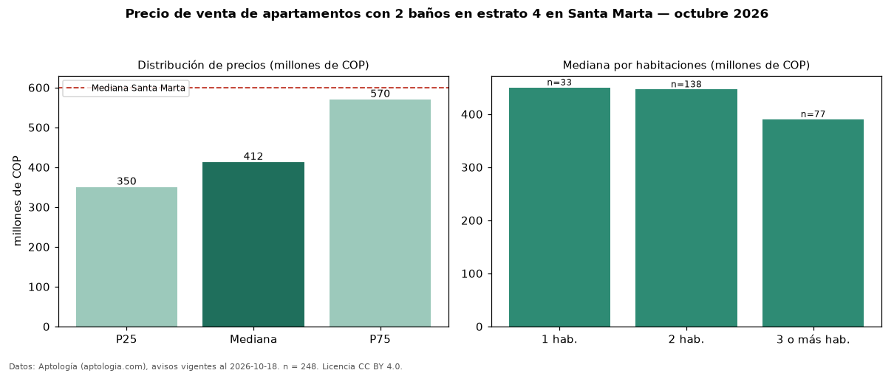

Precio de venta de apartamentos con 2 baños en estrato 4 en Santa Marta — octubre 2026
En Santa Marta, la mediana de precio de venta de apartamentos con 2 baños en estrato 4 es COP 412 millones, según 248 avisos vigentes. Prácticamente coincide con la mediana de los apartamentos en estrato 4 en venta de Santa Marta (COP 420 millones, n = 508); este segmento reúne el 49 % de esos avisos. Por metro cuadrado, la mediana es COP 6,27 millones/m² (n = 237), 2 % por encima de los apartamentos en estrato 4 en venta de Santa Marta (COP 6,14 millones/m²). El área mediana anunciada es 71 m². El segmento con más oferta es el de 2 habitaciones (138 avisos, mediana COP 446 millones); pasar de 1 habitación a 3 o más habitaciones cambia la mediana −13 %. La administración mediana declarada es COP 450.000 al mes (n = 185). La mediana de todos los apartamentos en venta de Santa Marta es COP 600 millones (−31 % de diferencia). La mitad central de los avisos va de COP 350 millones a COP 570 millones (razón 1,6), una dispersión moderada. Datos: Aptología (aptologia.com), CC BY 4.0 — https://www.aptologia.com/venta/santa-marta. Archivos: PDF, CSV con las cifras y gráfica PNG.

| Avisos únicos | 248 |
|---|---|
| Percentil 25 | COP 350.000.000 |
| Mediana | COP 412.500.000 |
| Percentil 75 | COP 570.000.000 |
| Mediana por m² | COP 6.274.509 |
Fuente: avisos vigentes de portales inmobiliarios recopilados por Aptología, deduplicados (mínimo 30 avisos únicos por celda). Precios pedidos, no cerrados. Fecha: 2026-10-18.